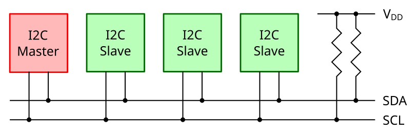

Introduction to I2C and SMBus¶
I²C (pronounce: I squared C and written I2C in the kernel documentation) is a protocol developed by Philips. It is a slow two-wire protocol (variable speed, up to 400 kHz), with a high speed extension (3.4 MHz). It provides an inexpensive bus for connecting many types of devices with infrequent or low bandwidth communications needs. I2C is widely used with embedded systems. Some systems use variants that don’t meet branding requirements, and so are not advertised as being I2C but come under different names, e.g. TWI (Two Wire Interface), IIC.
The latest official I2C specification is the “I2C-bus specification and user manual” (UM10204) published by NXP Semiconductors. However, you need to log-in to the site to access the PDF. An older version of the specification (revision 6) is archived here.
SMBus (System Management Bus) is based on the I2C protocol, and is mostly a subset of I2C protocols and signaling. Many I2C devices will work on an SMBus, but some SMBus protocols add semantics beyond what is required to achieve I2C branding. Modern PC mainboards rely on SMBus. The most common devices connected through SMBus are RAM modules configured using I2C EEPROMs, and hardware monitoring chips.
Because the SMBus is mostly a subset of the generalized I2C bus, we can use its protocols on many I2C systems. However, there are systems that don’t meet both SMBus and I2C electrical constraints; and others which can’t implement all the common SMBus protocol semantics or messages.
Terminology¶
Using the terminology from the official documentation, the I2C bus connects one or more master chips and one or more slave chips.

Simple I2C bus¶
A master chip is a node that starts communications with slaves. In the
Linux kernel implementation it is called an adapter or bus. Adapter
drivers are in the drivers/i2c/busses/ subdirectory.
An algorithm contains general code that can be used to implement a
whole class of I2C adapters. Each specific adapter driver either depends on
an algorithm driver in the drivers/i2c/algos/ subdirectory, or includes
its own implementation.
A slave chip is a node that responds to communications when addressed
by the master. In Linux it is called a client. Client drivers are kept
in a directory specific to the feature they provide, for example
drivers/media/gpio/ for GPIO expanders and drivers/media/i2c/ for
video-related chips.
For the example configuration in figure, you will need a driver for your I2C adapter, and drivers for your I2C devices (usually one driver for each device).